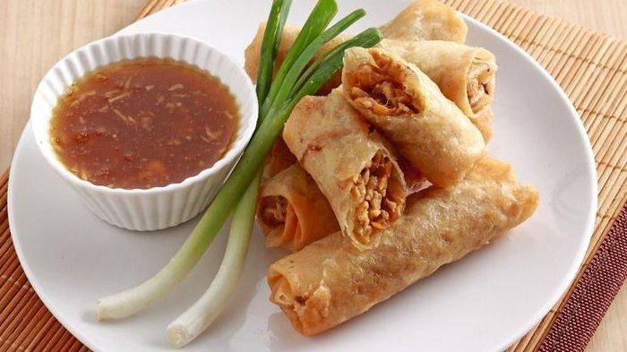

Terbaru! 4 Makanan Khas Indonesia Yang Diakui Dunia
Ada Beberapa Kuliner Indonesia termasuk warisan budaya Dunia UNESCO, Ada apa saja ya?


RENDANG
Rendang adalah hidangan khas dari Indonesia, tepatnya dari daerah Minangkabau di Sumatera Barat. Hidangan ini terkenal karena dagingnya yang dimasak dalam campuran rempah-rempah kaya rasa, santan kelapa, dan bumbu lainnya hingga menjadi sangat kering dan berwarna gelap.
Rendang dikenal sebagai salah satu hidangan daging yang paling kaya rasa di dunia. Rendang sering dihidangkan dalam acara-acara khusus,
seperti perayaan, pernikahan, dan acara keluarga. Selain itu, rendang juga menjadi makanan populer di berbagai restoran Indonesia dan restoran Indonesia di luar negeri. Hidangan ini telah mendapatkan pengakuan internasional dan sering disebut sebagai salah satu hidangan terenak di dunia.

NASI GORENG
Nasi goreng adalah hidangan khas Indonesia yang terdiri dari nasi yang digoreng bersama dengan berbagai bahan tambahan, seperti daging (biasanya ayam, udang, sapi, atau bakso), telur, sayuran (seperti wortel, buncis, dan kacang polong), dan rempah-rempah.
Hidangan ini sering dihidangkan dengan bumbu yang kaya rasa, termasuk kecap manis, kecap asin, bawang putih, bawang merah, cabai, dan bumbu-bumbu lainnya.

LUMPIA
Lumpia adalah hidangan khas Indonesia yang terdiri dari gulungan atau "roll" yang terbuat dari kulit tipis yang biasanya disebut kulit lumpia, kulit spring roll, atau kulit pangsit. Kulit ini diisi dengan campuran bahan seperti tauge (taugeh), tahu (tofu), telur, daging
(biasanya ayam atau udang), jamur, dan berbagai bumbu. Isian lumpia dapat dimasak terlebih dahulu atau digoreng bersama dengan kulitnya.

TEMPE GORENG
Tempe goreng adalah hidangan Indonesia yang terbuat dari tempe yang digoreng hingga renyah. Tempe adalah produk makanan yang dibuat dari kedelai yang difermentasi dengan jamur Rhizopus oligosporus atau Rhizopus oryzae. Tempe adalah sumber protein yang kaya dan merupakan makanan yang sangat umum dikonsumsi di Indonesia.
Info Selengkapnya klik disini!>